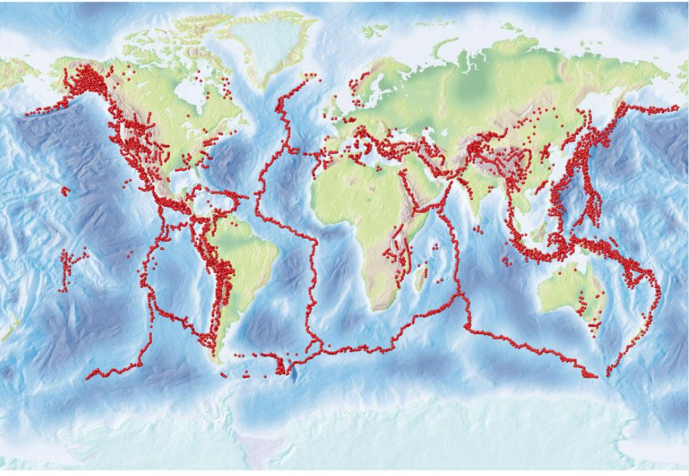

Terremotos: la Tierra en movimiento
Bajo nuestros pies, las rocas están sometidas a fuerzas que pueden acumularse durante años, décadas o siglos. Cuando parte de esa tensión se libera de manera repentina, la energía se propaga por la Tierra en forma de ondas sísmicas.
¿Qué es un terremoto?
Un terremoto es la vibración del suelo producida por la liberación repentina de energía en el interior de la Tierra. Muchos terremotos se originan cuando las rocas se desplazan a lo largo de una falla, una fractura de la corteza en la que existe movimiento relativo entre sus lados.
La mayoría de los terremotos naturales están relacionados con procesos tectónicos. También pueden producirse sismos por actividad volcánica, colapsos subterráneos y determinadas actividades humanas.
Un terremoto no tiene que ocurrir exactamente en el límite entre dos placas: también puede producirse dentro de una placa, cuando las fuerzas tectónicas reactivan una falla existente.
1. Cómo se acumula la tensión en las fallas
El movimiento de las placas
Las placas tectónicas se desplazan continuamente, aunque por lo general lo hacen a velocidades de unos pocos centímetros al año. Cuando sus movimientos ejercen fuerzas sobre las rocas, estas pueden deformarse lentamente.
La fricción impide el deslizamiento
Las superficies de una falla no siempre se deslizan libremente. La fricción y las irregularidades de las rocas pueden mantener bloqueados sus lados, incluso mientras las fuerzas tectónicas siguen actuando.
La deformación aumenta
Mientras la falla permanece bloqueada, las rocas cercanas acumulan deformación elástica. La tensión puede aumentar hasta que las condiciones permiten que la falla se deslice.
La ruptura libera energía
Cuando la resistencia de la falla deja de mantener el bloqueo, una zona de la roca se rompe o se desliza y la ruptura puede propagarse. Parte de la energía liberada viaja como ondas sísmicas y produce el movimiento que sentimos en la superficie.
Este modelo explica cómo las rocas pueden deformarse mientras una falla está bloqueada y recuperar parcialmente su forma al producirse el deslizamiento. No todas las fallas se comportan de manera idéntica: algunas también presentan deslizamiento lento y otros procesos que modifican la acumulación de tensión.
2. Dónde se producen los terremotos
Límites convergentes
Dos placas se acercan. En algunas zonas, una placa se hunde bajo otra mediante un proceso llamado subducción. Estas regiones pueden generar terremotos desde poca profundidad hasta cientos de kilómetros dentro de la placa que desciende.
Las zonas de subducción pueden producir algunos de los terremotos más grandes registrados en el planeta.
Límites divergentes
Dos placas se separan y el material del manto contribuye a formar nueva corteza, especialmente en las dorsales oceánicas. La extensión y las fracturas de la corteza producen principalmente terremotos superficiales.
Límites transformantes
Dos placas se desplazan lateralmente una respecto de la otra. La fricción puede bloquear segmentos de la falla y permitir que acumulen tensión antes de deslizarse.
Terremotos dentro de las placas
Algunas fallas se encuentran lejos de los límites actuales de las placas. Las fuerzas transmitidas a través de la litosfera pueden reactivar estas estructuras y producir terremotos intraplaca.
3. El foco, el epicentro y las ondas sísmicas
El punto del interior terrestre donde comienza la ruptura se denomina hipocentro o foco sísmico. El epicentro es el punto de la superficie situado directamente sobre él.
Desde la zona de ruptura, la energía se propaga mediante ondas sísmicas. Las ondas internas viajan por el interior del planeta; las ondas superficiales se desplazan a lo largo de la superficie y pueden contribuir significativamente a los daños.
La profundidad del foco, la magnitud, la distancia a las poblaciones, las características del suelo y la calidad de las construcciones influyen en cómo se percibe un terremoto y en sus posibles efectos.
La magnitud caracteriza el tamaño del terremoto a partir de mediciones instrumentales. La intensidad describe los efectos y el nivel de sacudida en un lugar determinado. Un mismo terremoto puede tener una magnitud y producir intensidades diferentes según la localidad.
4. ¿Se pueden predecir los terremotos?
La ciencia puede identificar fallas activas, estudiar la frecuencia de los terremotos y estimar probabilidades de ocurrencia a largo plazo en determinadas regiones. Sin embargo, no es posible predecir de forma fiable el día, la hora, el lugar exacto y la magnitud de un terremoto específico.
Los sistemas de alerta temprana tampoco predicen el terremoto: detectan un evento que ya comenzó y pueden emitir avisos antes de que llegue la sacudida más intensa a ciertas zonas.
5. Registro mundial de terremotos recientes
Consulta los eventos sísmicos registrados en los últimos siete días. La lista se obtiene automáticamente del catálogo del Servicio Geológico de Estados Unidos (USGS) y presenta hasta 30 eventos de magnitud 2,5 o superior.
| Fecha y hora (Costa Rica) | Magnitud | Profundidad | Ubicación | Fuente oficial |
|---|---|---|---|---|
| Consultando el catálogo sísmico... | ||||
Los horarios se muestran en la zona horaria de Costa Rica. La magnitud, la profundidad y la ubicación pueden ser revisadas por las redes sismológicas a medida que se dispone de nuevas mediciones. Consulta el enlace de cada evento para ver sus detalles y actualizaciones.
Este registro es mundial y no constituye una lista exhaustiva de todos los sismos. El umbral de magnitud y la cobertura del catálogo determinan qué eventos aparecen.
Una Tierra que nunca permanece inmóvil
Los terremotos son una expresión de la dinámica interna del planeta. Estudiarlos permite comprender cómo se deforman las rocas, cómo interactúan las placas y cómo cambia la superficie terrestre.
La observación sísmica, la investigación geológica y la preparación de las comunidades son herramientas esenciales para reducir los riesgos asociados a estos fenómenos.